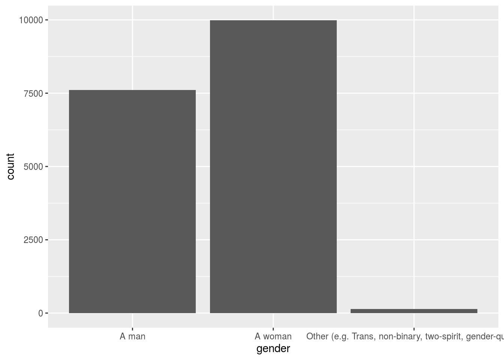
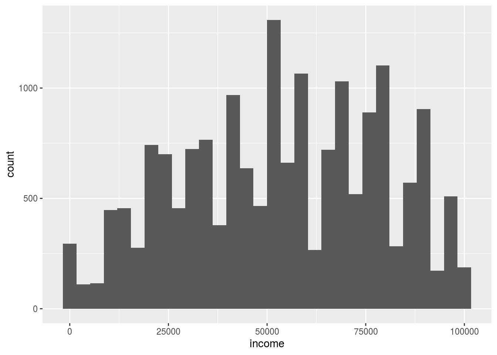

Abstract
This paper investigate how gender and income affect the 2019 election and find that the party should care more about women’s requests since they participate more in the election than men. in addition, the income of people who participate in the election is normally distributed.
Introduction
The objective of the paper is to study how gender and income affect the election via some statistical analysis.
We give the histogram of income and bar chart of gender and find that the income is normally distributed and more women than men participate in the election.
Data
The data set used here is the 2019 Canadian Election Study online survey data with 37882 observations and 22 variables. Here we only consider two of them: gender and income and see the distribution of them. In addition, for the variable income, we only consider people with income of less than $100000.
decon <-
decon%>%
filter(income<100000)
decon <-
decon%>%
select(income,gender)
decon%>%
ggplot(aes(x=gender))+
geom_bar()
We first give the distribution of gender as above shows. We see more women than men in this plot and we in this way conclude that women are more likely to participate in the election and if the party want to iwn in the election, they should care more about the requests from women.
decon%>%
ggplot(aes(x=income))+
geom_histogram()
## `stat_bin()` using `bins = 30`. Pick better value with `binwidth`.
We then give the distribution of income less than $100000. Here we only consider people with income less than $100000 since only those people are representative and people with too high salaries are not representative. From the distribution, the income is closed to be normally distributed centred at about $5000 even a little left skewed.
Discussion
weakness and next steps
Here the data set is derived via online survey and in this way, there may be non-response error. In addition, there may be some other factors that may also affect the election but are not included in the 22 variables. In the further studies, we should include as many as the related factors.
Reference
Paul A. Hodgetts and Rohan Alexander (2020). cesR: Access the CES Datasets a Little Easier.. R package version 0.1.0.
R Core Team (2020). R: A language and environment for statistical computing. R Foundation for Statistical Computing, Vienna, Austria. URL https://www.R-project.org/.
Wickham et al., (2019). Welcome to the tidyverse. Journal of Open Source Software, 4(43), 1686, https://doi.org/10.21105/joss.01686